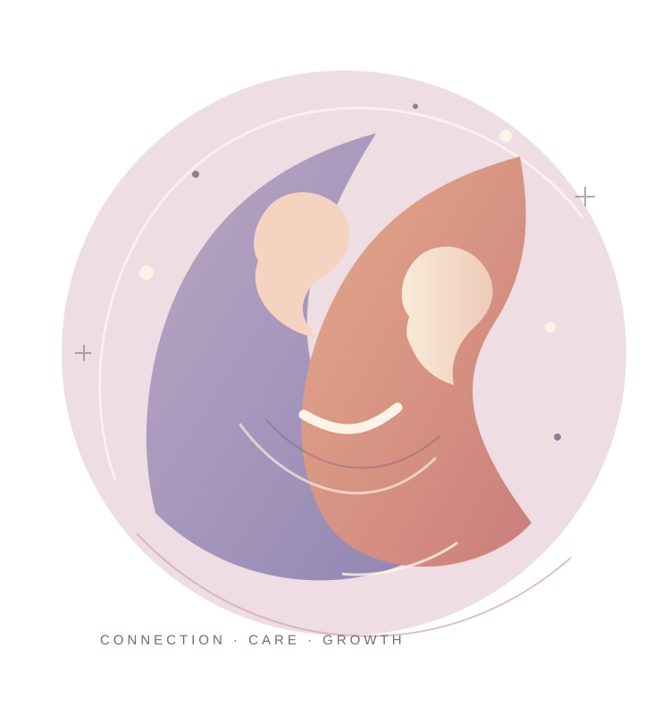

01 /
Attachment & parent–infant relationships
How caregiver sensitivity, emotional availability and everyday interaction contribute to the development of secure early relationships.
EARLY RELATIONSHIPSDEVELOPMENTAL PSYCHOLOGY
I study how early relationships, emotional regulation, and environments contribute to child development — from infancy to the preschool years.
Marina Fuertes Full Professor (Professor Coordenador Principal)
Lisbon School of Education · Polytechnic University of Lisbon

I am a Full Professor at the Lisbon School of Education (Polytechnic University of Lisbon), with a PhD and Habilitation in Psychology. My research focuses on infant development, attachment and the quality of early interactions.
My work draws on longitudinal research and structured observation of infants, families and educators to investigate self-regulation, parental sensitivity and social-emotional development, including the experiences of children born preterm.
I also study children's participation and learning in play-based, collaborative activities and help bridge developmental research with educational and early-intervention practice.
Understanding how children develop within relationships, caregiving and educational settings.
How caregiver sensitivity, emotional availability and everyday interaction contribute to the development of secure early relationships.
EARLY RELATIONSHIPSRegulatory behaviour, communication, caregiving and attachment in infants born at term or preterm, studied longitudinally.
INFANT DEVELOPMENTChildren's participation, adult–child communication and pedagogical interaction during play and collaborative activities.
EARLY EDUCATIONParenting support, family contexts, early intervention and psychological factors influencing child and family health.
FAMILY WELL-BEINGA selection spanning infant attachment, paternal sensitivity and relationships in early education.
The transmission of pedagogical and relational models in the tandem situation.
A longitudinal study of early interactions and infant–father attachment in Portugal.
Mother–infant regulation, still-face paradigm violations and attachment.
Interaction and communication with children in shared activities.
Search the 54 documents visible in the attached Scopus author profile. Additional books and works appear in Ciência Vitae.
Journal dates and author lists follow the supplied Scopus export (including abbreviated names). Where a DOI has not been independently verified, “Find article” opens a title search rather than an unverified DOI.
Selected projects recorded in the Ciência Vitae curriculum.
Longitudinal investigation of how early regulation and attachment relate to development, schooling and health through childhood.
Co-Principal Investigator · 2022.07322.PTDCStudying interaction, participation and learning in collaborative tasks involving children and adults.
Principal Investigator · Academia do ConhecimentoA longitudinal study of infant development, self-regulation and attachment in infants born before 31 weeks of gestation.
Principal Investigator · PTDC/MHC-PED/1424/2014Research on infant self-regulation, parenting and the impact of neonatal assessment intervention during the first year.
Principal Investigator · PTDC/PSI-EDD/110682/2009My academic work connects research on early development with the education of teachers, early-intervention specialists and psychologists.
Full Professor (Professor Coordenador Principal)Lisbon School of Education · Polytechnic University of Lisbon
Habilitation (Agregação) in PsychologyFaculty of Psychology and Educational Sciences - University of Porto
Post-Doc in Child DevelopmentHarvard Medical School
PhD in PsychologyFaculty of Psychology and Educational Sciences - University of Porto
Master's in Developmental Psychology (Early Intervention)Faculty of Psychology and Educational Sciences - University of Porto
Degree in Educational SciencesFaculty of Psychology and Educational Sciences - University of Lisbon
Coordinator of the master's programmes in Early Intervention and Preschool Education at ESELx, with involvement in further postgraduate programmes.
Experience supervising doctoral and master's research in developmental psychology, parent–infant interaction and early childhood education.
Research and professional activity includes international collaboration, publications, peer review and work at the intersection of developmental science and practice.
View institutional profile ↗Examples of books and editorial work documented in Ciência Vitae.
Marina Fuertes
Edited by Marina Fuertes · CIED–ESELx/IPL
Edited by Marina Fuertes · CIED
For academic enquiries, collaborative research or educational exchange:
marinaf@eselx.ipl.pt ↗